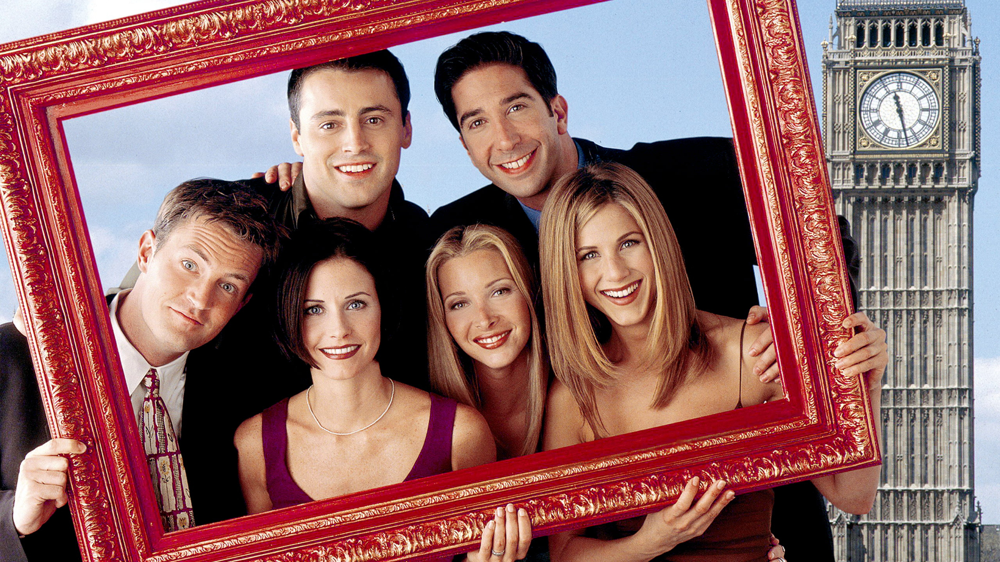
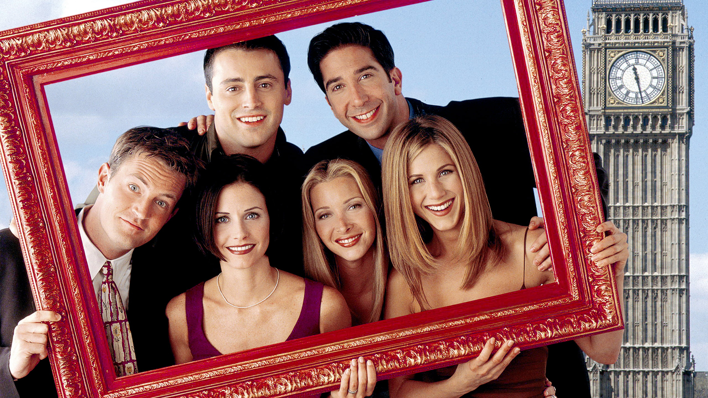

Game of Thrones
Game of Thrones é uma série de televisão baseada nos livros “As Crônicas de Gelo e Fogo” de George R. R. Martin. A trama se passa no continente fictício de Westeros, onde várias famílias nobres competem pelo controle do Trono de Ferro e, consequentemente, dos Sete Reinos..
Breaking Bad
Breaking Bad é uma série de televisão americana criada por Vince Gilligan. A trama segue Walter White, um professor de química do ensino médio em Albuquerque, Novo México, que é diagnosticado com câncer de pulmão terminal. Para garantir o futuro financeiro de sua família, Walter decide usar suas habilidades em química para produzir e vender metanfetamina, com a ajuda de seu ex-aluno, Jesse Pinkman.
Friends
Friends é uma sitcom americana criada por David Crane e Marta Kauffman. A série acompanha a vida de seis amigos que vivem em Nova York: Rachel, Monica, Phoebe, Joey, Chandler e Ross12. Eles enfrentam juntos os desafios da vida adulta, incluindo relacionamentos, carreiras e amizades, tudo com muito humor e situações engraçadas.
The Walking Dead
The Walking Dead é uma série de televisão pós-apocalíptica criada por Frank Darabont, baseada nos quadrinhos de Robert Kirkman, Tony Moore e Charlie Adlard12. A história segue Rick Grimes, um xerife que acorda de um coma em um mundo devastado por zumbis. Ele se junta a um grupo de sobreviventes enquanto procuram por segurança e enfrentam tanto os mortos-vivos quanto outros humanos, que muitas vezes são uma ameaça ainda maior.
The Big Bang Theory
The Big Bang Theory é uma sitcom americana que segue a vida de dois físicos brilhantes, Sheldon Cooper e Leonard Hofstadter, que trabalham no Instituto de Tecnologia da Califórnia e dividem um apartamento em Pasadena. Eles são amigos de Howard Wolowitz, um engenheiro aeroespacial, e Rajesh Koothrappali, um astrofísico. A dinâmica do grupo muda quando Penny, uma aspirante a atriz e garçonete, se muda para o apartamento ao lado.
The Simpsons
Os Simpsons é uma série de animação americana criada por Matt Groening. A série é uma paródia satírica do estilo de vida da classe média dos Estados Unidos, explorando aspectos da cultura, sociedade e televisão através da família Simpson. A família é composta por Homer, o pai desajeitado e amante de cerveja; Marge, a mãe dedicada; Bart, o filho travesso de 10 anos; Lisa, a filha de 8 anos e gênio não reconhecido; e Maggie, o bebê que nunca larga a chupeta.
Stranger Things
Stranger Things é uma série de ficção científica, terror e suspense criada pelos irmãos Duffer. A história se passa na cidade fictícia de Hawkins, Indiana, nos anos 1980. Tudo começa quando um garoto de 12 anos, Will Byers, desaparece misteriosamente. Enquanto a polícia e a mãe de Will, Joyce, procuram por ele, seus amigos Mike, Dustin e Lucas também iniciam uma busca própria. Eles acabam encontrando Eleven, uma garota com poderes telecinéticos que escapou de um laboratório secreto.
La Casa de Papel
La Casa de Papel é uma série espanhola de drama e suspense criada por Álex Pina. A trama gira em torno de um grupo de nove habilidosos ladrões, liderados por um homem conhecido como “O Professor”. Eles se trancam na Casa da Moeda da Espanha com o ambicioso plano de realizar o maior roubo da história, imprimindo 2,4 bilhões de euros. Durante o assalto, eles precisam lidar com reféns e com a polícia, além de enfrentar conflitos internos que ameaçam a execução do plano.